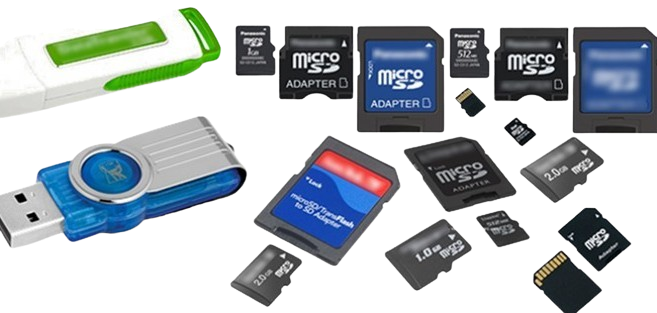

¿Como funciona una memoria?
La memoria informática desempeña un papel fundamental en el rendimiento de los dispositivos
electrónicos, ya que es el lugar donde se almacenan y gestionan los datos que utiliza el sistema.
En términos de arquitectura, la memoria se divide en diferentes tipos, cada uno con
características y propósitos específicos. Por ejemplo, la RAM (memoria de acceso aleatorio) es
esencial para la operación diaria de un dispositivo, ya que permite el acceso rápido a los datos
que están en uso. Esto significa que cuando abres un programa o un archivo, el sistema carga la
información en la RAM para que el procesador pueda acceder a ella de manera rápida y eficiente.
Por otro lado, la memoria ROM (memoria de solo lectura) es utilizada para almacenar
información crítica que no necesita cambiar, como el firmware del sistema, que es el software que
se ejecuta al iniciar el dispositivo. A diferencia de la RAM, la ROM retiene su contenido incluso
cuando el dispositivo está apagado, lo que garantiza que el sistema pueda arrancar
correctamente cada vez.
Además, existe la memoria caché, que actúa como un intermediario entre la RAM y el procesador.
Su función es almacenar temporalmente datos e instrucciones que se utilizan con frecuencia, lo
que reduce el tiempo que el procesador necesita para acceder a la RAM. Esto resulta en un
rendimiento mejorado, especialmente en tareas que requieren procesamiento intensivo.
La gestión de la memoria también es clave en la multitarea, ya que permite que múltiples
aplicaciones se ejecuten simultáneamente sin comprometer el rendimiento general del sistema.
La memoria se asigna y libera de manera dinámica, lo que significa que cuando un programa ya
no se necesita, la memoria que utilizaba puede ser reutilizada por otros procesos.
En resumen, la memoria informática no solo almacena datos, sino que también optimiza el
rendimiento del sistema, facilita la ejecución de múltiples tareas y asegura que el dispositivo
funcione de manera eficiente y efectiva. Sin una memoria adecuada, los dispositivos no podrían
operar de la manera en que lo hacen hoy en día, lo que subraya su importancia en la informática
moderna.
